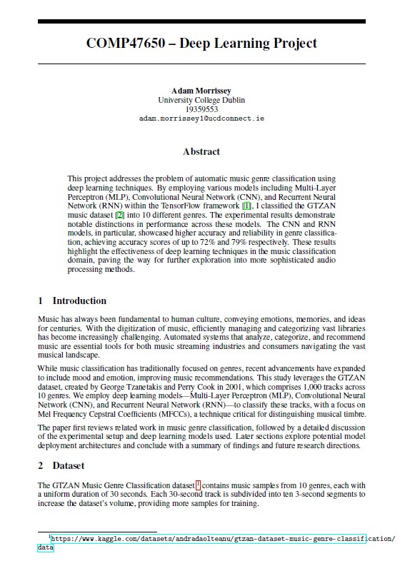
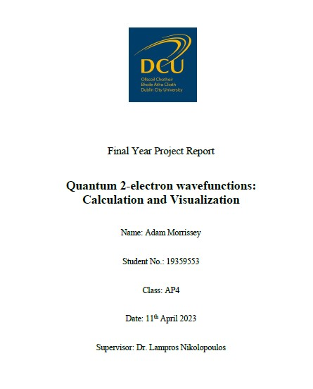

Projects
Structural Dynamics of MUC5AC Mucin with Silica Nanoparticles
Investigated the flexibility and metastable states of MUC5AC mucin using molecular dynamics simulations and Markov State Modelling on ICHEC High performance computing systems and conducted molecular docking studies to evaluate the impact of silica nanoparticles on protein stability.

Music Genre Classification with Deep Learning
Developed and evaluated deep learning models (MLP, CNN, RNN) for music genre classification using the GTZAN dataset, achieving up to 80% accuracy with RNN. Conducted feature extraction using MFCCs, optimized hyperparameters, and implemented regularization techniques to enhance model performance and reduce overfitting.
Two-Electron System Simulation
Created numerical simulations of two-electron interactions and wave packet scattering in one and two dimensions. Applied finite difference methods to calculate and animate probability densities, using symmetry conditions for identical particles.
